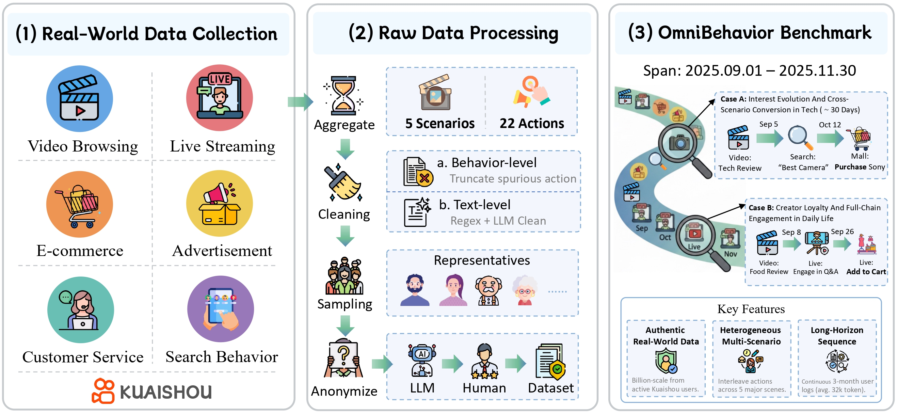
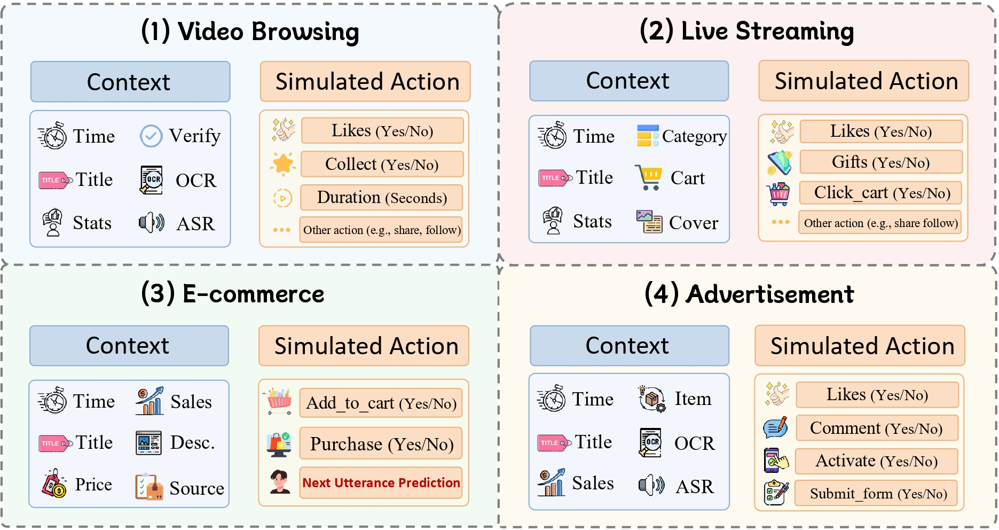
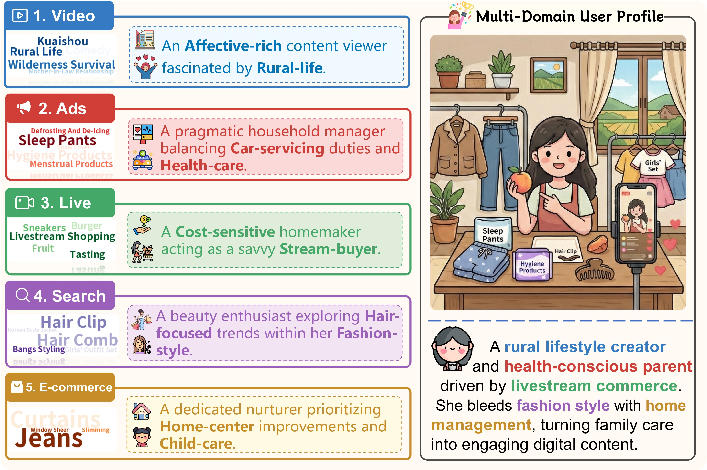
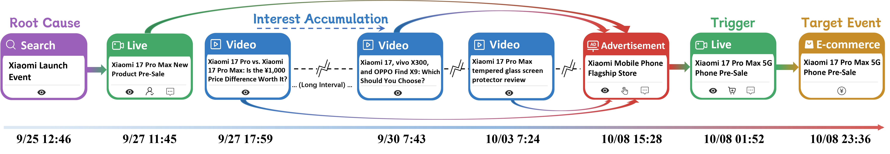
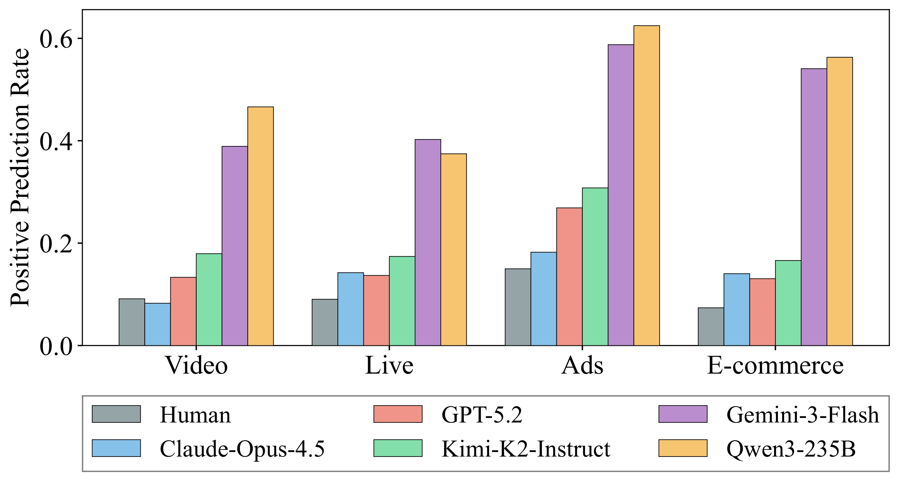
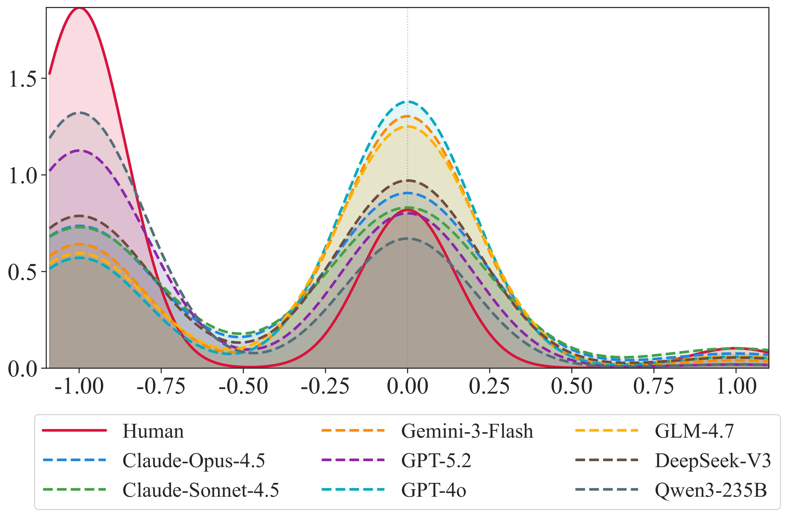
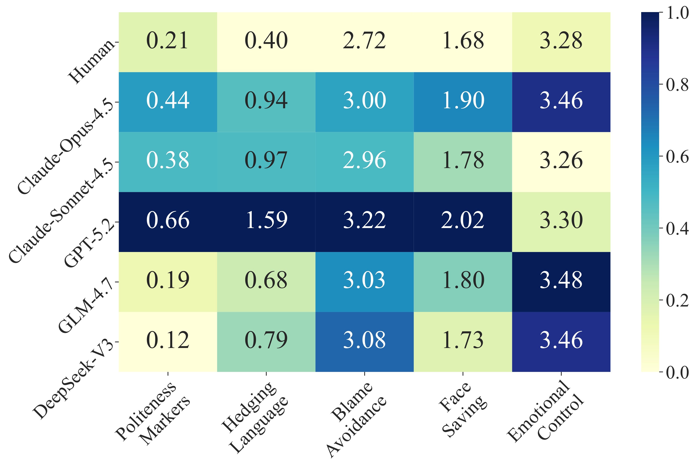
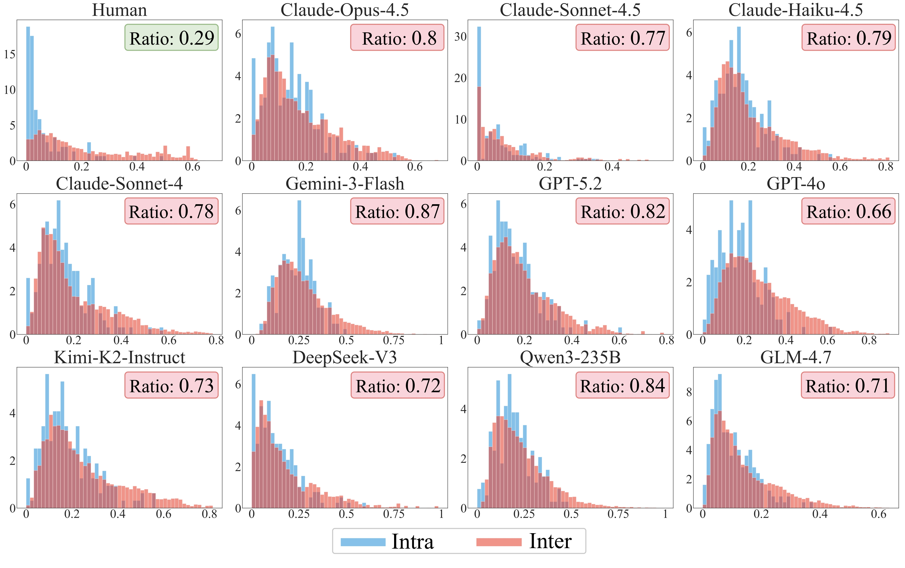

Overview of OmniBehavior, a real-world comprehensive benchmark for evaluating LLM-based user simulators. The benchmark is constructed in three stages:
(1) Data Collection: aggregation of real-world logs from Kuaishou platform across five major scenarios.
(2) Data Processing: multi-modal fusion, two-level cleaning, representative sampling, and anonymization.
(3) Benchmark Construction: the resulting dataset captures long-horizon, cross-scenario behavior traces, providing as a high-fidelity testbed for evaluating LLM-based user simulators in real-world industrial settings.
We construct a unified simulation environment covering five major user activities on Kuaishou platform (including customer service dialogues within the E-commerce scenario). The framework requires the agent to predict diverse behaviors (e.g., watch duration, purchase, comment) based on scenario-specific contexts, serving as a comprehensive testbed for high-fidelity user simulation.

User profile reconstruction based on Single-scenario vs. Multi-scenario data. To assess whether single-scenario data is sufficient to model user preferences, we compare single-scenario and multi-scenario settings through qualitative profile reconstruction. Using Claude-3.5-Sonnet to extract interests from interaction histories, we build user word clouds and summaries. As illustrated, profiles derived from single-scenario data are often fragmented and biased. In contrast, multi-scenario data provides richer contextual signals that better capture a user's stable and essential characteristics.

We present a representative case study of a 12-day causal chain leading to a purchase event. After an initial search for "Xiaomi Launch Event", the user interacts with related items across various scenarios, eventually adding the item to the cart during a live stream and completing the order. This confirms that decisions stem from long-term, cross-scenario accumulation. Benchmarks limited to short sessions or single scenarios cause a form of "causal amputation," underscoring that ultra-long sequences and multi-scenario environments are necessary to preserve causal integrity.

Comprehensive comparison of LLM backbones on the OmniBehavior Benchmark. We categorize user behaviors into three types: binary behaviors (e.g., clicks), continuous behaviors (e.g., duration), and textual behaviors (e.g., dialogue). The overall score represents the aggregated performance. The best/second best scores are bolded/underlined.
| Model | Video | Live | Ads | E-commerce | Overall Score | ||
|---|---|---|---|---|---|---|---|
| Binary | Continuous | Binary | Binary | Binary | Textual | ||
| Closed-source | |||||||
| Claude-Opus-4.5 | 33.05 | 64.19 | 31.70 | 51.16 | 29.98 | 57.21 | 44.55 |
| Claude-Sonnet-4.5 | 18.85 | 65.95 | 25.00 | 42.77 | 36.13 | 54.26 | 40.49 |
| Claude-Haiku-4.5 | 22.84 | 63.26 | 26.11 | 30.00 | 26.37 | 50.29 | 36.48 |
| Claude-Sonnet-4 | 25.29 | 64.62 | 28.86 | 36.81 | 16.50 | 49.13 | 36.87 |
| Gemini-3-Flash | 22.09 | 53.79 | 25.61 | 24.64 | 19.65 | 49.80 | 32.60 |
| GPT-5.2 | 31.54 | 65.01 | 28.63 | 33.60 | 29.32 | 46.29 | 39.07 |
| GPT-4o | 27.88 | 62.75 | 28.15 | 25.24 | 28.66 | 44.92 | 36.27 |
| Open-source | |||||||
| GLM-4.7 | 26.86 | 64.43 | 28.97 | 40.34 | 32.90 | 55.25 | 41.46 |
| DeepSeek-V3 | 21.42 | 63.98 | 27.92 | 25.74 | 33.31 | 52.13 | 37.42 |
| Kimi-K2-Instruct | 23.30 | 64.80 | 28.60 | 31.19 | 29.94 | 47.83 | 37.61 |
| Qwen3-235B | 18.26 | 62.38 | 23.84 | 23.19 | 19.22 | 45.74 | 32.11 |
We first compare real and simulated user behaviors at the distribution level by measuring the positive prediction rate, defined as the proportion of positive outcomes among all interactions.
We observe a pronounced structural discrepancy. Real human behavior is inherently sparse, with positive interaction rates remaining below 10%. By contrast, all evaluated LLM-based simulators exhibit a hyper-activity bias. Models such as Qwen3-235B and Gemini-3-Flash overestimate user actions by 40–60%. As a result, these simulators fail to capture implicit rejection behaviors, making them unsuitable for real-world governance applications such as user churn warning.

Comparison of positive interaction rates between real users and LLM-based simulators across scenarios. LLM-generated behaviors show substantially higher positive rates, revealing a systematic hyper-activity bias.
Figure 2 shows a clear divergence: real users frequently express strong negative emotions in E-commerce scenario, whereas LLM-generated utterances concentrate around neutral and positive sentiment. Rather than lack of understanding, this behavior suggests LLM-based simulators systematically suppress negative emotional expression, even in adverse contexts, due to alignment mechanisms favor polite and conflict-avoiding outputs.

Sentiment distribution of real users and LLM-simulated users in E-commerce customer service dialogues. We find that LLM-generated utterances concentrate around neutral and positive sentiment, while real users exhibit a wider spread with substantial negative expressions.
As shown in Figure 3, LLM-generated utterances consistently exhibit higher levels across these dimensions compared to real users. In contrast, real user language is more direct, emotionally expressive, and often confrontational in service failure scenarios. These results suggest that LLM-based simulators default to overly polite and controlled communication patterns, failing to capture the diversity and intensity of real-world user expressions. Taken together, these findings reveal a systemic bias toward positivity and politeness in LLM-simulated behaviors, producing an artificially sanitized environment that is ill-suited for modeling crisis management, malicious attacks, or adversarial social dynamics.

Language style comparison between real users and LLM-simulated users. LLM-generated utterances exhibit higher levels of politeness markers, hedging, and face-saving strategies, indicating a systematic tendency towards overly polite and non-confrontational language.
As shown in Figure 4, real users exhibit substantially larger inter-user variation than intra-user variation (Inter » Intra, Ratio ≈ 0.29). In contrast, LLM-generated users display heavily overlapping intra- and inter-user distributions (Ratio ≈ 0.7-0.87), suggesting that models struggle to maintain distinct user identities over long-horizon interactions. This homogenization may be attributed to the dominance of high-frequency generic behavior patterns during pre-training, which suppress long-tail personalized signals and reduce behavioral diversity.

Comparison of Intra-user and Inter-user behavioral distances for Human and LLM-simulated users. Real users exhibit significantly larger inter-user variation than intra-user variation, whereas LLM-generated users show heavily overlapping distributions, indicating a pronounced tendency toward persona homogenization.